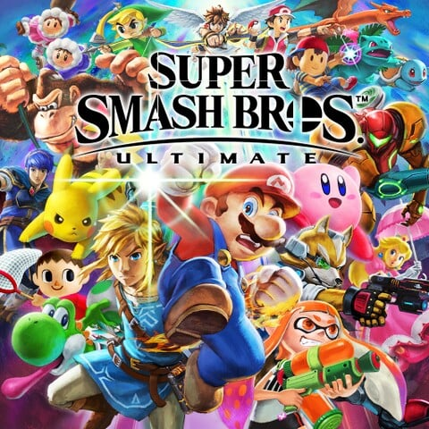
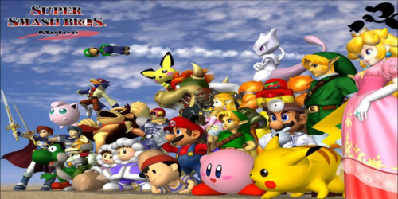
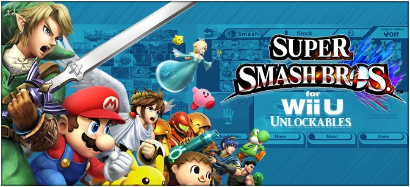
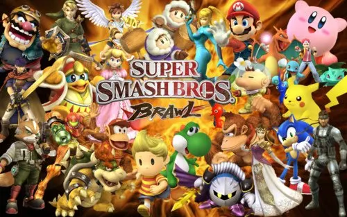
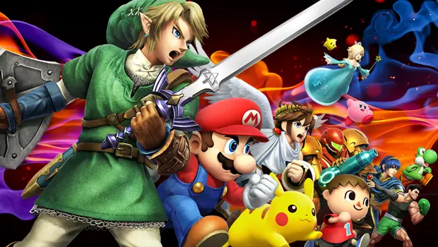

Smash
Creation
The Super Smash Bros. series is a crossover series of multiplayer fighting games in which many well-known Nintendo characters are pitted against each other to fight, with each character using their unique abilities in battle. The series was created by Masahiro Sakurai, who has directed every game in the series.
Everything about Main series Smash games
A platform fighter for up to eight players in which characters from Nintendo games and third-party franchises fight to knock each other out of an arena.
Games
Super Smash Bros:Ultimate
Super Smash Bros. Ultimate received universal approved from both critics and players, with some reviewers calling it the best installment in the series. It received praise for its large amount of content and fine-tuning of existing Smash gameplay elements, although its online mode was widely reviewed. As of December 31, 2023. Ultimate had sold over 33.67 million copies worldwide, making it the best-selling Super Smash Bros game.
Super Smash Bros: Melee
Melee features gameplay unique from that of other fighting games. Compared to characters in other fighting games, Melee characters have simple movesets and lack complicated button inputs Melee received universal acclaim, with many critics praising the game's expansion and refinement from its N64 predecessor, Super Smash Bros., as well as its visuals, tight controls, multiplayer mode, and organized soundtrack, although its single-player modes, lack of originality, and similarity to its predecessor received attacked.
Super Smash Bros: for Wii U
Super Smash Bros. for Wii U was officially released on November 21, 2014 in the Americas, and was followed by Europe on November 28, 2014, Australia and New Zealand and Japan on December 6, 2014.on November 29, 2014, The game is playable on the Wii U with a variety of controller options, including the Wii U GamePad, the Wii U Pro Controller, The Wii U version features high-definition 1080p graphics and a special mode called 8-Player Smash that allows up to eight players at the same time.
Super Smash Bros:Brawl
Brawl is fundamentally similar to its predecessors Super Smash Bros. and Super Smash Bros. Melee, being a fighting game that contains characters with simple movesets and an emphasis on movement and ringouts. However, Brawl introduced many elements that would become standard in later installments, such as an expanded adventure mode and support for online play through the Nintendo Wi-Fi Connection.
Super Smash Bros:for 3DS
Super Smash Bros. for Nintendo 3DS was released on September 13, 2014 in Japan, and was released in most other parts of the world on October 3, 2014. The game was released in stores one day earlier in Germany on October 2, one day later in Australia on October 4, in Hong Kong and Taiwan on July 24, 2015, and in South Korea on September 10, 2015. As of the closure of the Nintendo 3DS eShop on March 27, 2023, it is no longer possible to officially digitally purchase this game or any of its post-launch downloadable content. On October 4, 2023 Nintendo announced that online support for the 3DS would be ending during April 2024, the exact date was announced on January 24, 2024 as April 8, meaning the game will no longer be playable online without hacking after that point.
Section 1
excepturi sint, obcaecati cupiditate non provident, similique sunt in culpa, qui officia deserunt mollitia animi, Et harum quidem reru[d]um facilis est e[r]t expedita distinctio. Nam libero tempore, cumsoluta nobis est eligendi optio, aut rerum necessitatibus saepe eveniet, ut et voluptates repudiandae sint et molestiae non recusandae. Itaque earum rerum ut et voluptates repudiandae sint et molestiae non recusandae. Itaque earum rerum hic tenetur a sapiente delectus,ut aut reiciendis voluptatibus maiores alias consequatur aut perferendis doloribus asperiores repellat.
Section 2
excepturi sint, obcaecati cupiditate non provident, similique sunt in culpa, qui officia deserunt mollitia animi, Et harum quidem reru[d]um facilis est e[r]t expedita distinctio. Nam libero tempore, cumsoluta nobis est eligendi optio, aut rerum necessitatibus saepe eveniet, ut et voluptates repudiandae sint et molestiae non recusandae. Itaque earum rerum ut et voluptates repudiandae sint et molestiae non recusandae. Itaque earum rerum hic tenetur a sapiente delectus,ut aut reiciendis voluptatibus maiores alias consequatur aut perferendis doloribus asperiores repellat.
Top 5 Super Smash Bro Games
| Name | Date | Genre | Copies Sold |
|---|---|---|---|
| Super Smash bros.Melee | 2001 | Platform (Game Cube) | 7 million + |
| Super Smash Bros. Brawl | 2008 | Platform (Wii) | 13 million + |
| Super Smash Bros | 2014 | Platform (3DS) | 9.6 million + |
| Super Smash Bros | 2014 | Platform (Wii U) | 5.4 million + |
| Super Smash Bro Ultimate | 2018 | Platform (Nintendo Switch) | 32 million + |